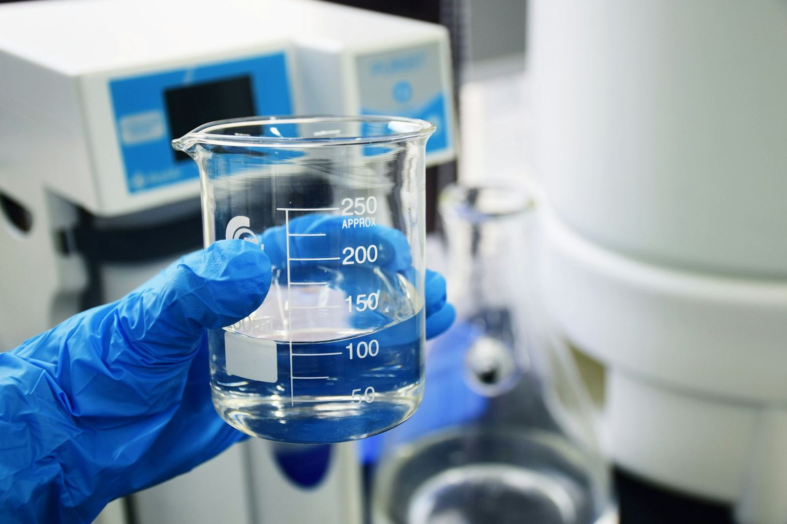
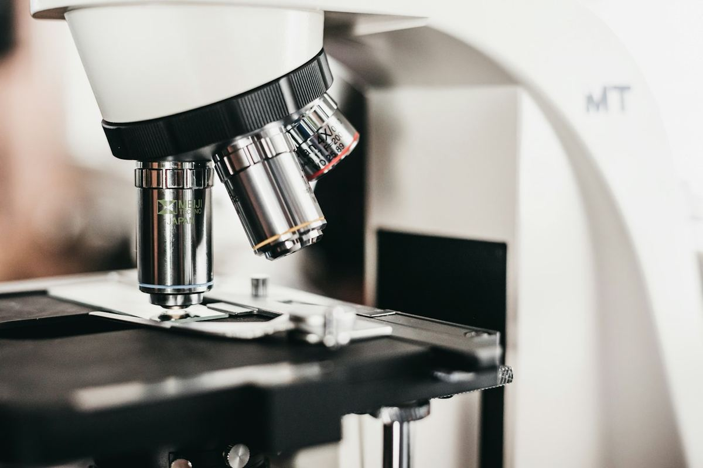
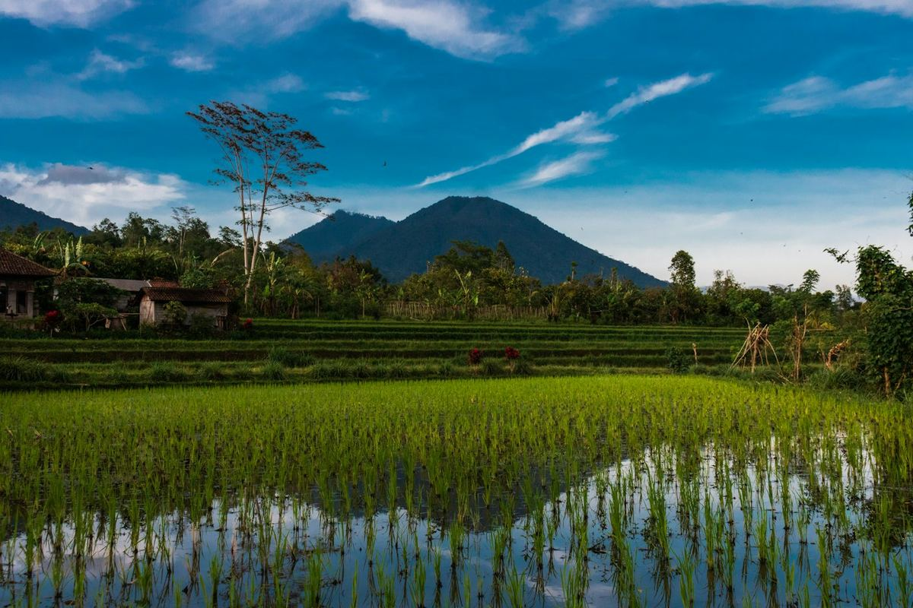
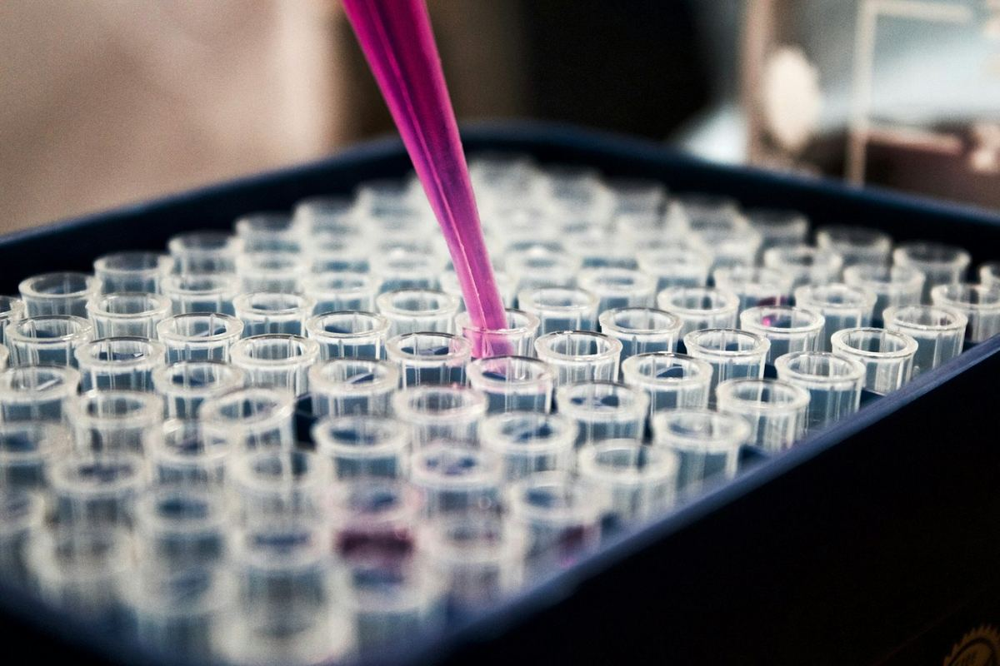
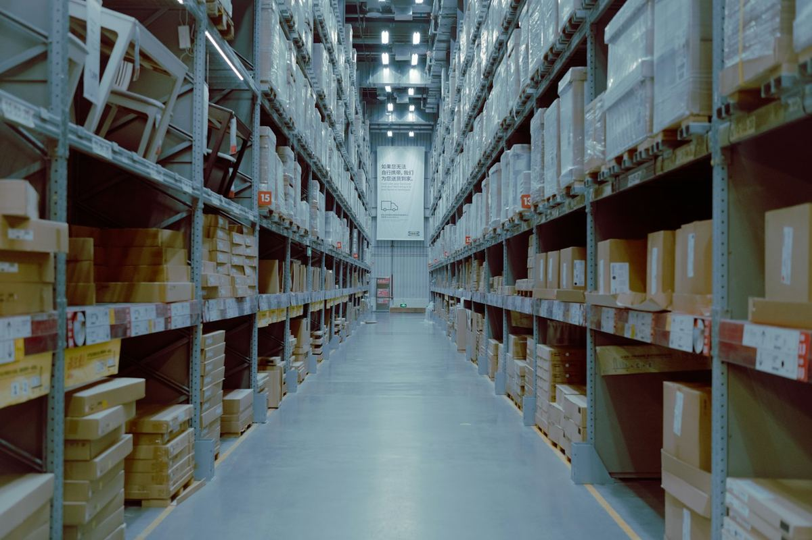

Menyiapkan pengadaan alat laboratorium di instansi
Pengadaan di instansi punya tahapan dan dokumen sendiri. Persiapan yang rapi membantu barang yang datang benar-benar sesuai kebutuhan laboratorium.
Baca artikelCV Izdihaar 84 menaungi tiga perusahaan dengan bidang usaha dan spesialisasi masing-masing: alat laboratorium, bahan habis pakai, serta mesin dan peralatan untuk pertanian, peternakan, dan perikanan. CV Izdihaar 84 juga melayani pengadaan furniture umum dan furniture laboratorium.

Setiap perusahaan memiliki bidang usaha, spesialisasi, dan tanggung jawab operasional sendiri. CV Izdihaar 84 menaungi ketiganya dan memastikan setiap kebutuhan ditangani oleh perusahaan yang tepat.

Penyediaan alat laboratorium dan bahan habis pakai untuk kebutuhan penelitian, pendidikan, industri, dan laboratorium.

Penyediaan mesin dan peralatan laboratorium untuk menunjang pekerjaan di sektor pertanian, peternakan, dan perikanan.
Satu pengadaan sering melibatkan beberapa jenis barang sekaligus: alat, bahan habis pakai, peralatan untuk sektor pertanian dan perikanan, hingga furniture. Di bawah naungan CV Izdihaar 84, setiap jenis kebutuhan itu ditangani oleh perusahaan yang memang menekuni bidangnya.
Dari alat dan bahan laboratorium, peralatan untuk sektor agro, hingga furniture untuk ruang kerja dan laboratorium.
Peralatan untuk pengujian, praktikum, dan penelitian, termasuk laboratorium farmasi, kedokteran, pertanian, dan peternakan.
Ditangani oleh perusahaan di bawah naungan kami yang berfokus pada bidang laboratorium.
Selengkapnya
Bahan dan perlengkapan yang terpakai setiap hari di laboratorium dan perlu diganti secara berkala.
Ditangani oleh perusahaan di bawah naungan kami yang berfokus pada bidang laboratorium.
SelengkapnyaMesin dan peralatan laboratorium untuk menunjang pekerjaan di sektor pertanian, peternakan, dan perikanan.
Ditangani oleh perusahaan di bawah naungan kami yang berfokus pada bidang pertanian, peternakan, dan perikanan.
Selengkapnya
Furniture untuk perkantoran, ruang rapat, instansi, dan fasilitas pendidikan, serta furniture khusus laboratorium.
Disediakan oleh CV Izdihaar 84, untuk furniture umum maupun furniture laboratorium.
SelengkapnyaLewat formulir, telepon, atau WhatsApp. Sertakan jenis barang, jumlah, dan kapan dibutuhkan.
Permintaan Anda diarahkan ke perusahaan yang menangani bidang tersebut.
Pembahasan detail kebutuhan dilanjutkan langsung dengan tim dari perusahaan itu.
Kami memasok alat laboratorium farmasi, kedokteran, pertanian, dan peternakan beserta bahan habis pakainya ke perguruan tinggi dan instansi pemerintah, di antaranya:
Alat laboratorium dan bahan habis pakai
Ternate, Maluku UtaraAlat laboratorium dan bahan habis pakai
Makassar, Sulawesi SelatanAlat laboratorium dan bahan habis pakai
Makassar, Sulawesi SelatanAlat laboratorium dan bahan habis pakai

Pengadaan di instansi punya tahapan dan dokumen sendiri. Persiapan yang rapi membantu barang yang datang benar-benar sesuai kebutuhan laboratorium.
Baca artikelMikroskop yang dirawat dengan benar bisa dipakai bertahun-tahun. Ini kebiasaan sederhana yang menjaga lensa tetap bersih dan mekanismenya tetap halus.
Baca artikel
Alat ukur yang tidak dikalibrasi bisa memberi hasil meleset tanpa disadari. Berikut gambaran singkat tentang kalibrasi dan cara menjadwalkannya.
Baca artikel